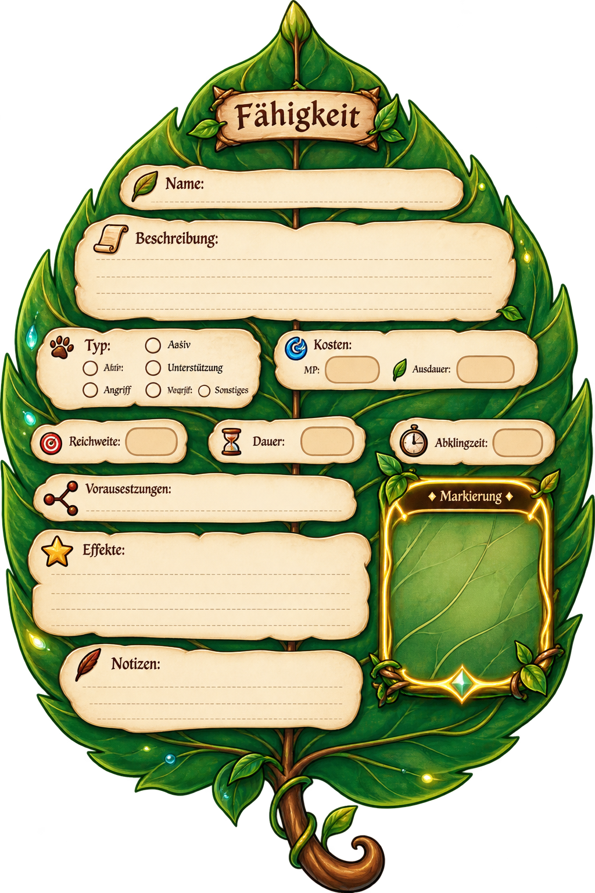

🌳 Weltenbaum
Fähigkeiten, Berufe, Spezialisierungen und Meisterschaften; mögliche Darstellung über Knospen und verschiedene Blattstufen.
Berufe
🌳 Weltenbaum
für den Bergmann
🌳 Weltenbaum
für den Handwerker
🌳 Weltenbaum
für den Juwelier
🌳 Weltenbaum
für den Landwirt
🌳 Weltenbaum
für den Runenmeister
🌳 Weltenbaum
für den Schmied
🌳 Weltenbaum
für den Transporteur
🌳 Weltenbaum
für den Verzauberer
🌳 Lebensstufen Berufe
- Stufe 1: Keimling
- Stufe 2: Sprössling
- Stufe 3: Jungling
- Stufe 4: Heranwachsender
- Stufe 5: Reifer
- Stufe 6: Erfahrener
- Stufe 7: Veteran
- Stufe 8: Meister
- Stufe 9: Legende
- Stufe 10: Mythos
📋 Beschreibung
- Der Weltenbaum ist ein zentraler Aspekt des Spiels, der die Entwicklung der Charaktere durch verschiedene Stufen darstellt.
- Fähigkeiten, Berufe, Spezialisierungen und Meisterschaften.
- Fähigkeiten werden als Blätter visualisiert.
- Knospe → junges Blatt → ausgewachsenes Blatt → leuchtendes Meisterblatt.
- Neue Fähigkeiten wachsen mit einer kurzen ruhigen Animation sichtbar in den Baum hinein.
- Der Baum bleibt über Jahreszeiten lebendig und gesund.
- Funktionaler Fortschritt und persönliche Geschichte sind getrennt.
- Fähigkeiten, Berufe, Spezialisierungen und Meisterschaften; mögliche Darstellung über Knospen und verschiedene Blattstufen.
🌳 Spezialisierungen
- Jeder Beruf hat seine eigenen Spezialisierungen, die im Weltenbaum dargestellt werden.
- Spieler können sich auf bestimmte Fähigkeiten spezialisieren, um ihre Rolle in der Gemeinschaft zu stärken.
- Ein Charakter kann Berufe ausprobieren, aber nicht alles perfektionieren.
- Nach dem vollständigen Abschluss eines Hauptzweiges bleiben ungefähr 25 % des Skillbaums durch die Spezialisierung nicht mehr erreichbar.
- Spieler können sich auf einen Hauptzweig spezialisieren, um bestimmte Fähigkeiten zu meistern, während andere Zweige eingeschränkt bleiben.
🌳 Designs
- Der Weltenbaum ist ein visuelles Element, das die Fortschritte der Spieler darstellt.
- Die Blätter des Baumes repräsentieren die Fähigkeiten und Fertigkeiten der Spieler.
- Die Äste des Baumes symbolisieren die verschiedenen Spezialisierungen innerhalb eines Berufs.
- Normale Fähigkeit: 🍃
- Ausgewählt:✨ 🍃 ✨
- Freigeschaltet: 🟢🍃
- Gesperrt: ⚫🍃
- Neue Fähigkeit verfügbar: 🌟🍃
5
Feuerball
